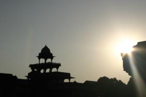

Le 29 novembre 2004,
 Nous sommes partis en milieu de matinée pour visiter la ville abandonnée de Fatehpur Sikri. En 1 heure de bus, nous étions arrivés a destination et nous nous sommes laisses tenter par une carriole tirée par des chevaux comme moyen de transport jusqu’à notre hôtel choisi dans le guide. Apres quelques altercations avec le conducteur qui voulait nous arnaquer (ils sont un peu pénibles les indiens à ce sujet !), nous entreprîmes de chercher ce fameux hôtel. A notre grande surprise, nous apprenons que tous les hôtels se trouvant à côté de la cité ont été fermés par le gouvernement afin de préserver ce site abandonné. Heureusement, nous rencontrons une française ayant vécu de nombreuses années en Inde et parlant couramment l’hindi. Elle a eu une petite fille avec un indien avec lequel elle s’est séparée depuis. Elle a essayé de vivre en France avec sa fille mais elle ne s’y sent plus à sa place à présent. Elle avait l’air un peu perdu... En tous cas, elle nous a conseillé un hôtel tenu par son ex-beau frère qui se situait un peu en dehors de la ville. Ils sont venus nous chercher en moto... C’était assez folklorique de nous voir tous les 3, chacun sur une moto, sans casque évidemment, ça n’existe pas ici, avec nos gros sacs à dos sur le dos et notre petit sac sur le ventre !!! L’hôtel était fort sympathique avec un grand jardin où nous avons pu nous faire bronzer au soleil. Ce qui nous a surtout marqué dans cet hôtel, c’est l’incroyable gentillesse des gens !
Nous avons ensuite visité la cité abandonnée en long, en large et en travers, c’était superbe ! La lumière particulière qui éclairait les murs des édifices au coucher du soleil nous a émerveillés ! Gaëlle et moi avons quand même réussi a perdre Michaël a un moment donne (petit coup de frayeur !), mais nous avons fini par nous retrouver avant la nuit ! ;-) Nous avons dîné au restaurant de l’hôtel et nous avons eu le droit a un "concert" privé réalisé par un indien jouant des percussions tout en chantant. Ca nous a littéralement transportés !
Eve-Laure
Bonjour Alors entre Manon et le déménagement, j’essaie de suivre votre parcours en Inde. Lionel et moi sommes impressionnés par les longs textes que vous envoyez : les écrivez dans les cyber cafés ? Pensez vous tenir cet rythme pendant 11 mois ? En tout cas, chapeau !! Est ce que vous tenez en parallèle un journal de bord papier (peut etre pas !!) ? Nous, nous le remplissions tous les soirs mais j’avoue que c’est plutot Lionel qui s’en chargeait tellement j’étais fatiguée. Et vous, comment vous sentez vous pour cette première semaine de voyage ? Est ce que tout va bien ? En tout cas, je pense à vous tous les jours et viens vous lire chaque jour aussi.
Juste une petite question : devons nous vous laisser des messages dans cette rubrique ou plutot dans le livre d’or ? Allez gros bisous à tous les deux, Sandrine
NB : quels sont vos contacts avec les indiens ? difficiles ? que pensez vous de ce décalage énorme avec notre société ? N’etes vous pas trop choqués par la misère ? Vous sentez vous à l’aise en tant qu’étranger ? Vous faites vous discrets ? Je me rappelle nos premiers pas en Inde et cette claque que nous avions prise !!!
Ca m’étonne pas que le cousin soit aller faire une escapade. Avec son sens inné de l’orientation, vous avez eues de la chance de le retrouver dans la journée.
Bisous
Pat
c’est rigolo : on ne s’appelle que rarement mais on communique grâce au site de Micha. Coome çà sert bien à quelque chose qu’il soit parti !
JF
{kind=link}
{kind=link}